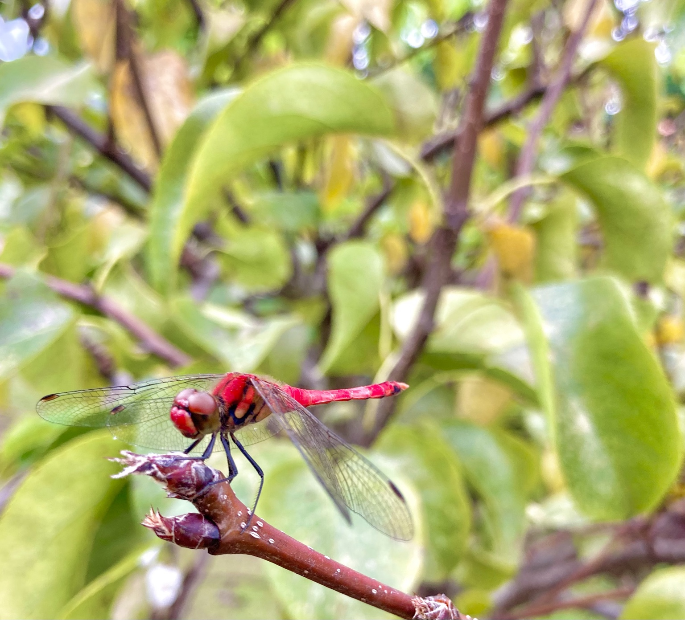
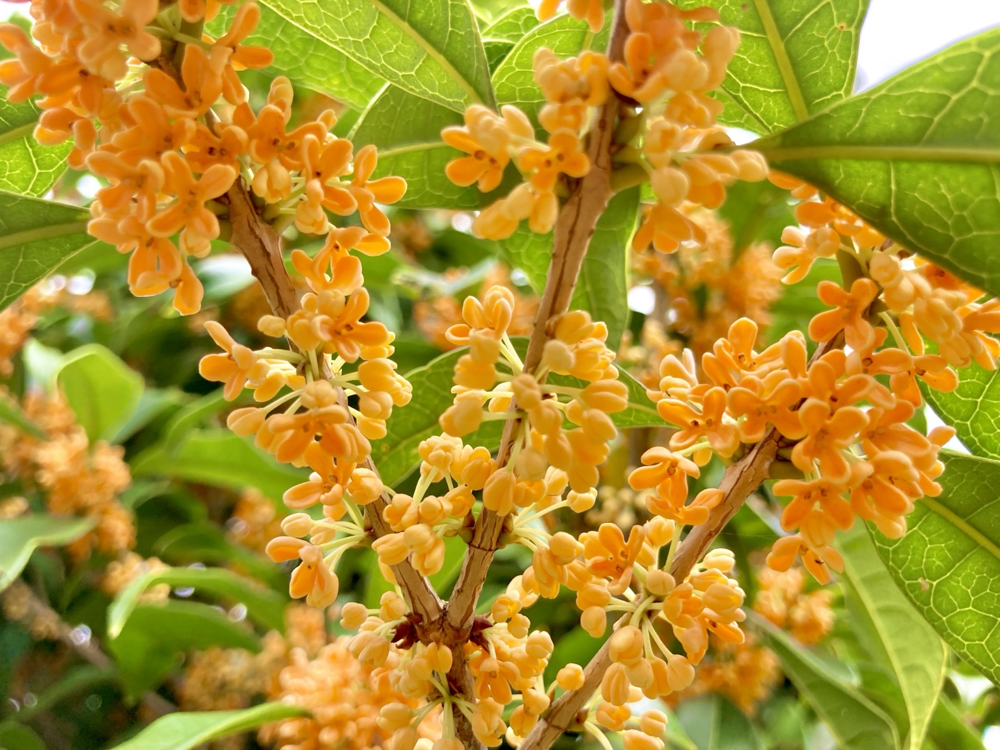

秋になると、道端や公園には色づいた落ち葉や木の実が見られるようになります。
赤や黄色の葉を探す。形の違う木の実を見比べる。気になったものを自分で選ぶ。
こうした身近な自然との関わりも、園芸療法の活動に取り入れることができます。
大切なのは、何を拾ったかだけでなく、その人がどのように関わったかを見ることです。

「拾う」までの過程に目を向ける
落ち葉を拾うまでには、周囲を見渡す、気になる葉を探す、手を伸ばす、色や形を確かめるといった行動があります。
支援者が先に選ぶのではなく、本人がどこを見て、何に興味を示すのかを待ってみる。その姿から、好みや選び方、体の動かし方などを知ることができます。
同じ秋でも、感じ方は人それぞれ
鮮やかな葉を好む人もいれば、虫食いの穴や枯れた部分に面白さを感じる人もいます。
金木犀の香りや赤とんぼの姿から、昔の出来事を思い出す人もいるでしょう。
一方で、虫や強い香りが苦手な人もいます。言葉だけでなく、視線や手の動き、近づく様子、距離を取る様子にも目を向けます。
その人なりの感じ方を知ることが、活動を考える手がかりになります。

完成した作品よりも、その人の経験を見る
拾った落ち葉や木の実は、貼り絵やリース、季節の飾りなどに使えます。
園芸療法では、作品の見栄えとともに、「自分で選べたか」「無理のない方法で参加できたか」「誰かに見せたいと思えたか」といった経験も大切にします。
拾わずに眺める、写真に残す、支援者と一緒に選ぶなど、参加の方法は一つではありません。本人の希望や状態に合わせて、活動の形を整えていきます。
安全に楽しむために
屋外では、気温や疲れやすさ、足元の状態を確認します。濡れた落ち葉は滑りやすいため注意が必要です。
自然素材を持ち帰る場合は、採取してよい場所か、虫やカビ、尖った部分がないかを確かめます。種類を判断できない植物や木の実は口に入れず、活動後には手を洗います。

一枚の落ち葉から始める
まずは、今日気になった落ち葉を一枚選んでみる。
その人が何を選び、どのように触れ、何を感じたのかに耳を傾ける。
落ち葉や木の実を拾う時間は、目の前の人を知り、その人らしい関わり方を考える機会になります。
身近な秋の自然から始められることも、園芸療法の魅力の一つです。